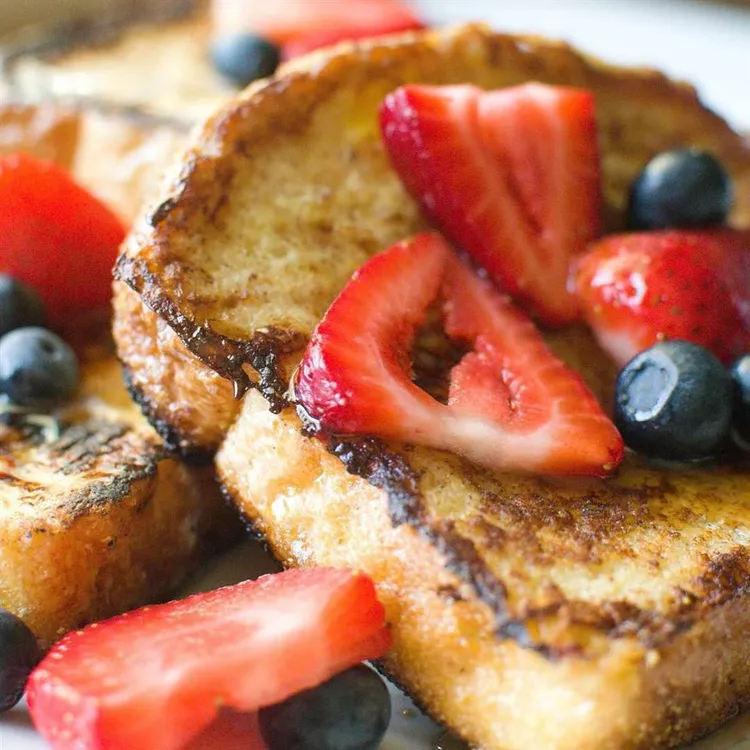

How to make delicious French Toast!

Ingredients
- 6 thick slices bread
- 2 eggs
- 2/3 cup whole milk or half-and-half
- 1 pinch of salt
- 1 teaspoon vanilla extract (optional)
- 1/4 teaspoon ground cinnamon (optional)
- Butter
Steps to Prepare
- Prepare the custard. Whisk together the eggs, milk, and flavorings until completely blended. Use a large bowl wide enough to dip the bread in. You can also pour the whipped custard into a baking dish for easy dipping.
- Heat a skillet or griddle over medium heat. You want it to be hot enough to form a crust when the custard-coated bread hits the pan, but not so hot that the crust burns before the custard that's soaked into the bread has a chance to cook.
- Dip the bread in the custard, turning it to coat completely on both sides. The dryer or sturdier your bread, the longer it can soak. Melt 1 or 2 tablespoons butter in the hot skillet. Depending on how large your skillet is, place one or two slices in the hot butter. Cook until golden brown, then turn over to cook on the other side. You can keep the slices warm on a rack in a 350º F oven until the rest of the toast is cooked.